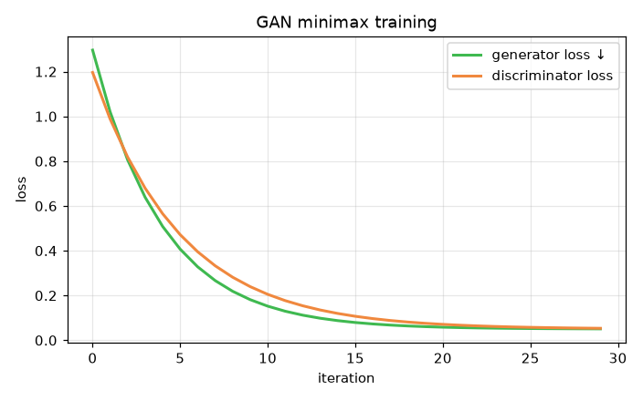

Generative Adversarial Network (GAN) — AI engineering example · part of the MLOps monorepo
This example is grounded in Generative Adversarial Network (GAN). The equations below drive every forward and backward pass in the implementation.
GANs consist of two networks competing in a minimax game. The discriminator $D$ maximizes its ability to distinguish real from fake samples. The generator $G$ minimizes the probability of its samples being detected as fake. At Nash equilibrium, $G$ reproduces the true data distribution $p_{data}$.
Concrete forward-pass / update evaluation using the algorithm's own equations:

Interactive GAN training dashboard: generator/discriminator loss curves, sample evolution grid, decision boundary.
The example follows a consistent data → train → evaluate → serve pipeline. Inputs are loaded and validated, transformed by the core algorithm, scored against held-out data, and exposed through a REST API.
| Class | Public methods | Responsibility |
|---|---|---|
PredictRequest | — | |
PredictBulkRequest | — | |
PredictResponse | — | |
BulkPredictResponse | — | |
DriftResponse | — | |
StatsResponse | — | |
GAN | __post_init__, _init_weights, _generator_forward, _generator_backward, _discriminator_forward, _discriminator_backward, fit, generate, predict_proba, predict, evaluate, save, load, to_dict | Generative Adversarial Network for image generation. Two networks compete: a generator creates synthetic images from random noise, and a discriminator learns to distinguish real from fake images. Args: latent_dim: Dimension of the random noise input to the generator img_size: Size of images (square) n_channels: Number of image channels hidden_dim: Hidden units in generator/discriminator learning_rate: Gradient descent step size for both networks n_iterations: Number of training iterations weight_decay: L2 regularization clip_value: Gradient clipping threshold random_seed: Random seed |
data.py reads the source dataset and splits train/test.model.py applies the mathematics from Section 1.api.py exposes prediction endpoints with drift detection.Key design choices in this module: a pure-NumPy implementation (no PyTorch/TensorFlow), schema validation via ai_core.validation, structured JSON logging through ai_core.logging, Prometheus metrics from ai_core.metrics, and MLflow/model-registry persistence via ai_core.model_registry. The FastAPI service wraps the trained model with observability middleware from ai_core.fastapi_middleware.
The most important behaviour is summarised below; full source for each module is collapsible so the page stays readable while remaining self-contained.
GAN.fit(X_real, n_iterations)Train the GAN on real images. Args: X_real: Real images (n_samples, N_FEATURES) flattened, values in [0, 1]
GAN.predict(z)Generate images from latent vectors.
"""Generative Adversarial Network (GAN) for image generation.
Architecture:
Generator:
Input (latent_dim,) -> Dense (hidden, ReLU) -> Dense (n_pixels, sigmoid) -> Output (1 x 8x8)
Discriminator:
Input (n_pixels) -> Dense (hidden, ReLU) -> Dense (1, sigmoid)
Loss: Binary cross-entropy for both generator and discriminator
"""
from dataclasses import dataclass, field
import numpy as np
def sigmoid(z: np.ndarray) -> np.ndarray:
z = np.clip(z, -500, 500)
return 1.0 / (1.0 + np.exp(-z))
def sigmoid_derivative(sig: np.ndarray) -> np.ndarray:
return sig * (1.0 - sig)
def relu(z: np.ndarray) -> np.ndarray:
return np.maximum(0, z)
def relu_derivative(z: np.ndarray) -> np.ndarray:
return (z > 0).astype(z.dtype)
@dataclass
class GAN:
"""Generative Adversarial Network for image generation.
Two networks compete: a generator creates synthetic images from random noise,
and a discriminator learns to distinguish real from fake images.
Args:
latent_dim: Dimension of the random noise input to the generator
img_size: Size of images (square)
n_channels: Number of image channels
hidden_dim: Hidden units in generator/discriminator
learning_rate: Gradient descent step size for both networks
n_iterations: Number of training iterations
weight_decay: L2 regularization
clip_value: Gradient clipping threshold
random_seed: Random seed
"""
latent_dim: int = 16
img_size: int = 8
n_channels: int = 1
hidden_dim: int = 32
learning_rate: float = 0.01
n_iterations: int = 200
weight_decay: float = 0.0001
clip_value: float = 1.0
random_seed: int = 42
n_features: int = field(init=False, repr=False)
# Generator weights
_gen_W1: np.ndarray | None = None
_gen_b1: np.ndarray | None = None
_gen_W2: np.ndarray | None = None
_gen_b2: np.ndarray | None = None
# Discriminator weights
_disc_W1: np.ndarray | None = None
_disc_b1: np.ndarray | None = None
_disc_W2: np.ndarray | None = None
_disc_b2: np.ndarray | None = None
training_mode: str = "gan"
loss_history: list[float] = field(default_factory=list)
_gen_loss_history: list[float] = field(default_factory=list, repr=False)
_disc_loss_history: list[float] = field(default_factory=list, repr=False)
def __post_init__(self) -> None:
self.n_features = self.img_size * self.img_size * self.n_channels
def _init_weights(self) -> None:
rng = np.random.default_rng(self.random_seed)
self._gen_W1 = rng.normal(0, np.sqrt(1.0 / self.latent_dim), (self.latent_dim, self.hidden_dim))
self._gen_b1 = np.zeros(self.hidden_dim)
self._gen_W2 = rng.normal(0, np.sqrt(1.0 / self.hidden_dim), (self.hidden_dim, self.n_features))
self._gen_b2 = np.zeros(self.n_features)
self._disc_W1 = rng.normal(0, np.sqrt(1.0 / self.n_features), (self.n_features, self.hidden_dim))
self._disc_b1 = np.zeros(self.hidden_dim)
self._disc_W2 = rng.normal(0, np.sqrt(1.0 / self.hidden_dim), (self.hidden_dim, 1))
self._disc_b2 = np.zeros(1)
def _generator_forward(self, z: np.ndarray) -> tuple[np.ndarray, dict]:
"""Forward pass for generator. Returns generated image and cache."""
N = z.shape[0]
h1 = relu(z @ self._gen_W1 + self._gen_b1)
h1 = np.clip(h1, -10, 10)
logits = h1 @ self._gen_W2 + self._gen_b2
img = sigmoid(logits)
cache = {"z": z, "h1": h1, "logits": logits, "img": img, "N": N}
return img, cache
def _generator_backward(self, d_logits: np.ndarray, cache: dict) -> dict:
"""Backward pass for generator. Returns weight gradients."""
z = cache["z"]
h1 = cache["h1"]
N = cache["N"]
d_h1 = (d_logits @ self._gen_W2.T).reshape(N, -1) * relu_derivative(h1)
dW_gen2 = h1.T @ d_logits / N
db_gen2 = np.sum(d_logits, axis=0) / N
dW_gen1 = z.T @ d_h1 / N
db_gen1 = np.sum(d_h1, axis=0) / N
return {"dW_gen1": dW_gen1, "db_gen1": db_gen1, "dW_gen2": dW_gen2, "db_gen2": db_gen2}
def _discriminator_forward(self, X: np.ndarray) -> tuple[np.ndarray, dict]:
"""Forward pass for discriminator. Returns probability and cache.
Args:
X: (N, n_features) input data
"""
h1 = relu(X @ self._disc_W1 + self._disc_b1)
h1 = np.clip(h1, -10, 10)
logits = h1 @ self._disc_W2 + self._disc_b2
prob = sigmoid(logits)
cache = {"X": X, "h1": h1, "logits": logits, "prob": prob}
return prob, cache
def _discriminator_backward(self, d_logits: np.ndarray, cache: dict) -> dict:
"""Backward pass for discriminator. Returns weight gradients and input gradient."""
X = cache["X"]
h1 = cache["h1"]
N = X.shape[0]
d_h1 = d_logits @ self._disc_W2.T * relu_derivative(h1)
dW_disc1 = X.T @ d_h1 / N
db_disc1 = np.sum(d_h1, axis=0) / N
dW_disc2 = h1.T @ d_logits / N
db_disc2 = np.sum(d_logits, axis=0) / N
dX = d_h1 @ self._disc_W1.T
return {
"dW_disc1": dW_disc1, "db_disc1": db_disc1,
"dW_disc2": dW_disc2, "db_disc2": db_disc2,
"dX": dX,
}
def fit(
self,
X_real: np.ndarray,
n_iterations: int | None = None,
) -> "GAN":
"""Train the GAN on real images.
Args:
X_real: Real images (n_samples, N_FEATURES) flattened, values in [0, 1]
"""
if self._gen_W1 is None:
self._init_weights()
if n_iterations is None:
n_iterations = self.n_iterations
n_samples = X_real.shape[0]
rng = np.random.default_rng(self.random_seed)
eps_bce = 1e-12
for _epoch in range(n_iterations):
z = rng.normal(0, 1, size=(n_samples, self.latent_dim))
gen_img, gen_cache = self._generator_forward(z)
real_prob, real_cache = self._discriminator_forward(X_real)
fake_prob, fake_cache = self._discriminator_forward(gen_img)
# Discriminator loss: BCE(real -> 1, fake -> 0)
disc_loss = -np.mean(
np.log(real_prob + eps_bce)
+ np.log(1 - fake_prob + eps_bce)
)
# Discriminator gradients
d_real_logits = (real_prob - 1) / n_samples
d_fake_logits = fake_prob / n_samples
grad_real = self._discriminator_backward(d_real_logits, real_cache)
grad_fake = self._discriminator_backward(d_fake_logits, fake_cache)
# Update discriminator
self._disc_W1 -= self.learning_rate * (grad_real["dW_disc1"] + grad_fake["dW_disc1"] + self.weight_decay * self._disc_W1)
self._disc_b1 -= self.learning_rate * (grad_real["db_disc1"] + grad_fake["db_disc1"])
self._disc_W2 -= self.learning_rate * (grad_real["dW_disc2"] + grad_fake["dW_disc2"] + self.weight_decay * self._disc_W2)
self._disc_b2 -= self.learning_rate * (grad_real["db_disc2"] + grad_fake["db_disc2"])
# Generator loss: fool discriminator (fake -> 1)
gen_loss = -np.mean(np.log(fake_prob + eps_bce))
# Generator gradients (backprop through discriminator)
d_fake_logits_g = -(1 - fake_prob) / n_samples
grad_fake_g = self._discriminator_backward(d_fake_logits_g, fake_cache)
d_gen_img = grad_fake_g["dX"]
d_gen_logits = d_gen_img * sigmoid_derivative(sigmoid(gen_cache["logits"]))
gen_grads = self._generator_backward(d_gen_logits, gen_cache)
# Gradient clipping for generator
gen_grad_norm = np.sqrt(
np.sum(gen_grads["dW_gen1"]**2) + np.sum(gen_grads["dW_gen2"]**2)
)
if gen_grad_norm > self.clip_value:
scale = self.clip_value / (gen_grad_norm + 1e-8)
for k in gen_grads:
gen_grads[k] *= scale
self._gen_W2 -= self.learning_rate * (gen_grads["dW_gen2"] + self.weight_decay * self._gen_W2)
self._gen_b2 -= self.learning_rate * gen_grads["db_gen2"]
self._gen_W1 -= self.learning_rate * (gen_grads["dW_gen1"] + self.weight_decay * self._gen_W1)
self._gen_b1 -= self.learning_rate * gen_grads["db_gen1"]
self._gen_loss_history.append(float(gen_loss))
self._disc_loss_history.append(float(disc_loss))
self.loss_history.append(float(gen_loss + disc_loss))
return self
def generate(self, n_samples: int, random_seed: int | None = None) -> np.ndarray:
"""Generate n_samples synthetic images from random noise.
Returns:
(n_samples, N_FEATURES) generated images in [0, 1]
"""
if self._gen_W1 is None:
raise ValueError("Model not trained")
rng = np.random.default_rng(random_seed or self.random_seed)
z = rng.normal(0, 1, size=(n_samples, self.latent_dim))
img, _ = self._generator_forward(z)
return img
def predict_proba(self, X: np.ndarray) -> np.ndarray:
"""Return discriminator probability that input is real."""
if self._disc_W1 is None:
raise ValueError("Model not trained")
prob, _ = self._discriminator_forward(X)
return prob.flatten()
def predict(self, z: np.ndarray) -> np.ndarray:
"""Generate images from latent vectors."""
img, _ = self._generator_forward(z)
return img
def evaluate(self, X: np.ndarray) -> dict[str, float]:
real_prob, _ = self._discriminator_forward(X)
gen = self.generate(n_samples=len(X))
fake_prob, _ = self._discriminator_forward(gen)
return {
"generator_loss": float(self._gen_loss_history[-1]) if self._gen_loss_history else 0.0,
"discriminator_loss": float(self._disc_loss_history[-1]) if self._disc_loss_history else 0.0,
"real_accuracy": float(np.mean(real_prob > 0.5)),
"fake_accuracy": float(np.mean(fake_prob < 0.5)),
"n_samples": float(len(X)),
}
def save(self, path: str) -> None:
arrays = {
"loss_history": np.array(self.loss_history),
"gen_W1": self._gen_W1, "gen_b1": self._gen_b1,
"gen_W2": self._gen_W2, "gen_b2": self._gen_b2,
"disc_W1": self._disc_W1, "disc_b1": self._disc_b1,
"disc_W2": self._disc_W2, "disc_b2": self._disc_b2,
"latent_dim": np.array([self.latent_dim]),
"img_size": np.array([self.img_size]),
"n_channels": np.array([self.n_channels]),
"hidden_dim": np.array([self.hidden_dim]),
"learning_rate": np.array([self.learning_rate]),
"n_iterations": np.array([self.n_iterations]),
"weight_decay": np.array([self.weight_decay]),
}
np.savez(path, **arrays)
@classmethod
def load(cls, path: str) -> "GAN":
data = np.load(path, allow_pickle=True)
obj = cls(
latent_dim=int(data["latent_dim"].item()),
img_size=int(data["img_size"].item()),
n_channels=int(data["n_channels"].item()),
hidden_dim=int(data["hidden_dim"].item()),
learning_rate=float(data["learning_rate"].item()),
n_iterations=int(data["n_iterations"].item()),
weight_decay=float(data["weight_decay"].item()),
random_seed=42,
)
obj.n_features = obj.img_size * obj.img_size * obj.n_channels
obj._init_weights()
obj._gen_W1 = data["gen_W1"]
obj._gen_b1 = data["gen_b1"]
obj._gen_W2 = data["gen_W2"]
obj._gen_b2 = data["gen_b2"]
obj._disc_W1 = data["disc_W1"]
obj._disc_b1 = data["disc_b1"]
obj._disc_W2 = data["disc_W2"]
obj._disc_b2 = data["disc_b2"]
obj.loss_history = list(data.get("loss_history", [0.0]))
return obj
def to_dict(self) -> dict:
return {
"latent_dim": self.latent_dim,
"img_size": self.img_size,
"n_channels": self.n_channels,
"hidden_dim": self.hidden_dim,
"learning_rate": self.learning_rate,
"n_iterations": self.n_iterations,
"weight_decay": self.weight_decay,
"training_mode": self.training_mode,
"n_epochs_run": len(self.loss_history),
"final_loss": self.loss_history[-1] if self.loss_history else 0.0,
}"""Training pipeline for GAN Image Generation."""
import argparse
import os
from pathlib import Path
from ai_core.logging import get_logger, setup_logging
from ai_core.model_registry import ModelRegistry
from ai_core.validation import DataValidator, create_gan_image_generation_schema
from gan_image_generation.data import (
IMAGE_SIZE,
N_CHANNELS,
load_training_data,
save_training_data,
train_test_split,
)
from gan_image_generation.model import GAN
logger = get_logger(__name__)
def train(
model_dir: Path,
data_path: Path | None = None,
n_samples: int = 500,
latent_dim: int = 16,
hidden_dim: int = 32,
learning_rate: float = 0.01,
n_iterations: int = 200,
weight_decay: float = 0.0001,
model_version: str = "1.0.0",
register_to_mlflow: bool = False,
test_size: float = 0.2,
random_seed: int = 42,
) -> dict:
"""Train the GAN model and save artifacts."""
X, y = load_training_data(data_path, n_samples=n_samples, random_seed=random_seed)
logger.info("Loaded training data", n_samples=len(X), data_path=str(data_path))
validator = DataValidator(create_gan_image_generation_schema())
validation = validator.validate(X)
if not validation.valid:
logger.error("Training data validation failed", errors=validation.errors)
raise ValueError(f"Training data validation failed: {validation.errors}")
logger.info("Training data validated", stats=validation.stats)
X_train, X_test, _, _ = train_test_split(
X, y, test_size=test_size, random_seed=random_seed
)
logger.info("Data split", n_train=len(X_train), n_test=len(X_test), test_size=test_size)
model_dir.mkdir(parents=True, exist_ok=True)
save_training_data(X, y, model_dir / "training_data.npz")
model = GAN(
latent_dim=latent_dim,
img_size=IMAGE_SIZE,
n_channels=N_CHANNELS,
hidden_dim=hidden_dim,
learning_rate=learning_rate,
n_iterations=n_iterations,
weight_decay=weight_decay,
random_seed=random_seed,
)
model.fit(X_train)
model.evaluate(X_train)
test_metrics = model.evaluate(X_test)
logger.info(
"Training complete",
training_mode=model.training_mode,
n_epochs=len(model.loss_history),
final_loss=model.loss_history[-1] if model.loss_history else 0.0,
test_metrics=test_metrics,
)
model_path = model_dir / f"gan_image_generation_model_v{model_version}.npz"
model.save(str(model_path))
_save_chart(model, model_dir, model_version)
metrics = {
**test_metrics,
"training_mode": "gan",
"n_epochs_run": float(len(model.loss_history)),
"final_loss": model.loss_history[-1] if model.loss_history else 0.0,
"n_train_samples": float(len(X_train)),
"n_test_samples": float(len(X_test)),
"latent_dim": float(latent_dim),
"hidden_dim": float(hidden_dim),
"learning_rate": float(learning_rate),
}
registry = ModelRegistry(base_dir=model_dir)
registry.save_model(
model_name="gan-image-generation",
model_version=model_version,
model_type="generative",
metrics=metrics,
parameters={
"latent_dim": latent_dim,
"img_size": IMAGE_SIZE,
"n_channels": N_CHANNELS,
"hidden_dim": hidden_dim,
"learning_rate": learning_rate,
"n_iterations": n_iterations,
"weight_decay": weight_decay,
"random_seed": random_seed,
},
artifacts={
f"gan_image_generation_model_v{model_version}.npz": model_path,
"training_data.npz": model_dir / "training_data.npz",
},
tags={"framework": "numpy", "task": "gan_image_generation", "model_type": "GAN"},
)
if register_to_mlflow:
registry.log_to_mlflow(
model_name="gan-image-generation",
model_version=model_version,
metrics=metrics,
params={
"latent_dim": latent_dim,
"img_size": IMAGE_SIZE,
"hidden_dim": hidden_dim,
"learning_rate": learning_rate,
"n_iterations": n_iterations,
},
artifacts={
"model": str(model_path),
"chart": str(model_dir / f"gan_image_generation_v{model_version}.png"),
},
tags={"model_type": "gan_image_generation", "framework": "numpy"},
)
logger.info("Registered model to MLflow", model="gan-image-generation", version=model_version)
return metrics
def _save_chart(model, output_dir: Path, version: str) -> None:
import matplotlib
matplotlib.use("Agg")
import matplotlib.pyplot as plt
if not model.loss_history:
return
fig, ax = plt.subplots(figsize=(10, 5))
ax.plot(model.loss_history, color="steelblue", linewidth=1.5, label="Total Loss")
if model._gen_loss_history:
ax.plot(model._gen_loss_history, color="orange", linewidth=1.0, label="Generator Loss")
if model._disc_loss_history:
ax.plot(model._disc_loss_history, color="green", linewidth=1.0, label="Discriminator Loss")
ax.set_xlabel("Training Iteration")
ax.set_ylabel("Loss")
ax.set_title("GAN Image Generation Training Loss")
ax.legend()
ax.grid(True, alpha=0.3)
ax.set_yscale("log")
plt.tight_layout()
chart_path = output_dir / f"gan_image_generation_v{version}.png"
plt.savefig(str(chart_path), dpi=100)
plt.close()
logger.info("Chart saved", path=str(chart_path))
def main():
parser = argparse.ArgumentParser(description="Train GAN Image Generation model")
parser.add_argument("--model-dir", type=Path, default=Path(os.getenv("MODEL_DIR", "/models")))
parser.add_argument("--data-path", type=Path, default=None)
parser.add_argument("--n-samples", type=int, default=int(os.getenv("N_SAMPLES", "500")))
parser.add_argument("--latent-dim", type=int, default=int(os.getenv("LATENT_DIM", "16")))
parser.add_argument("--hidden-dim", type=int, default=int(os.getenv("HIDDEN_DIM", "32")))
parser.add_argument("--learning-rate", type=float, default=float(os.getenv("LEARNING_RATE", "0.01")))
parser.add_argument("--n-iterations", type=int, default=int(os.getenv("N_ITERATIONS", "200")))
parser.add_argument("--weight-decay", type=float, default=float(os.getenv("WEIGHT_DECAY", "0.0001")))
parser.add_argument("--model-version", type=str, default=os.getenv("MODEL_VERSION", "1.0.0"))
parser.add_argument("--test-size", type=float, default=float(os.getenv("TEST_SIZE", "0.2")))
parser.add_argument("--random-seed", type=int, default=int(os.getenv("RANDOM_SEED", "42")))
parser.add_argument(
"--register-mlflow",
action="store_true",
default=os.getenv("REGISTER_MLFLOW", "false").lower() == "true",
)
parser.add_argument("--log-level", type=str, default=os.getenv("LOG_LEVEL", "INFO"))
args = parser.parse_args()
setup_logging(args.log_level)
args.model_dir.mkdir(parents=True, exist_ok=True)
metrics = train(
model_dir=args.model_dir,
data_path=args.data_path,
n_samples=args.n_samples,
latent_dim=args.latent_dim,
hidden_dim=args.hidden_dim,
learning_rate=args.learning_rate,
n_iterations=args.n_iterations,
weight_decay=args.weight_decay,
model_version=args.model_version,
register_to_mlflow=args.register_mlflow,
test_size=args.test_size,
random_seed=args.random_seed,
)
logger.info("Training finished", metrics=metrics, model_dir=str(args.model_dir))
if __name__ == "__main__":
main()"""Data loading and preprocessing for GAN-based image generation.
Generates synthetic images as training data for the GAN.
"""
from pathlib import Path
import numpy as np
IMAGE_SIZE = 8
N_CHANNELS = 1
N_FEATURES = IMAGE_SIZE * IMAGE_SIZE
LATENT_DIM = 16
DEFAULT_N_SAMPLES = 500
def generate_synthetic_data(
n_samples: int = DEFAULT_N_SAMPLES,
noise_level: float = 0.1,
random_seed: int = 42,
) -> tuple[np.ndarray, np.ndarray]:
"""Generate synthetic images for GAN training.
Returns:
X: (n_samples, N_FEATURES) image pixel arrays in [0, 1]
y: (n_samples,) uniform labels (not used by GAN discriminator training, placeholder)
"""
rng = np.random.default_rng(random_seed)
X = np.zeros((n_samples, N_FEATURES))
for i in range(n_samples):
grid = np.zeros((IMAGE_SIZE, IMAGE_SIZE), dtype=float)
cx, cy = rng.integers(2, IMAGE_SIZE - 2, size=2)
r = rng.integers(1, 4)
for gy in range(IMAGE_SIZE):
for gx in range(IMAGE_SIZE):
dist = np.sqrt((gx - cx) ** 2 + (gy - cy) ** 2)
if dist <= r:
grid[gy, gx] = 0.9
elif dist <= r + 1:
grid[gy, gx] = 0.5
X[i] = np.clip(grid.flatten() + rng.normal(0, noise_level, N_FEATURES), 0, 1)
y = np.ones(n_samples, dtype=int)
perm = rng.permutation(n_samples)
return X[perm], y[perm]
def load_training_data(
data_path: Path | None = None,
n_samples: int = DEFAULT_N_SAMPLES,
noise_level: float = 0.1,
random_seed: int = 42,
) -> tuple[np.ndarray, np.ndarray]:
if data_path and Path(data_path).exists():
data = np.load(data_path, allow_pickle=True)
return data["X"], data["y"]
return generate_synthetic_data(n_samples=n_samples, noise_level=noise_level, random_seed=random_seed)
def train_test_split(
X: np.ndarray, y: np.ndarray, test_size: float = 0.2, random_seed: int | None = None
) -> tuple[np.ndarray, np.ndarray, np.ndarray, np.ndarray]:
n = len(X)
n_test = max(1, int(n * test_size))
if random_seed is not None:
rng = np.random.default_rng(random_seed)
indices = rng.permutation(n)
else:
indices = np.random.permutation(n)
test_idx = indices[:n_test]
train_idx = indices[n_test:]
return X[train_idx], X[test_idx], y[train_idx], y[test_idx]
def save_training_data(X: np.ndarray, y: np.ndarray, path: Path) -> None:
path = Path(path)
path.parent.mkdir(parents=True, exist_ok=True)
np.savez(path, X=X, y=y)
def reshape_image(X: np.ndarray) -> np.ndarray:
return X.reshape(-1, N_CHANNELS, IMAGE_SIZE, IMAGE_SIZE)
def generate_latent(n_samples: int, latent_dim: int = LATENT_DIM, random_seed: int = 42) -> np.ndarray:
"""Generate random latent vectors for the generator."""
rng = np.random.default_rng(random_seed)
return rng.normal(0, 1, size=(n_samples, latent_dim))"""Serving API for GAN Image Generation.
Provides image generation via the trained GAN generator and real/fake
classification via the discriminator.
"""
import os
import time
from contextlib import asynccontextmanager
from pathlib import Path
import numpy as np
from ai_core.drift import DriftDetector
from ai_core.fastapi_middleware import add_observability_middleware
from ai_core.logging import get_logger, setup_logging
from ai_core.metrics import MetricsCollector
from ai_core.model_registry import ModelRegistry
from ai_core.validation import DataValidator, create_gan_image_generation_schema
from fastapi import FastAPI, HTTPException, Response
from pydantic import BaseModel, Field
from gan_image_generation.data import IMAGE_SIZE, N_CHANNELS, N_FEATURES, generate_synthetic_data
from gan_image_generation.model import GAN
logger = get_logger(__name__)
MODEL_DIR = Path(os.getenv("MODEL_DIR", "/models"))
MODEL_VERSION = os.getenv("MODEL_VERSION", "latest")
METRICS_PORT = int(os.getenv("GAN_IMAGE_GENERATION_METRICS_PORT", "8022"))
DRIFT_THRESHOLD = float(os.getenv("DRIFT_THRESHOLD", "0.2"))
class PredictRequest(BaseModel):
latent_vector: list[float] = Field(..., min_length=16, max_length=16)
class PredictBulkRequest(BaseModel):
requests: list[list[float]] = Field(..., min_length=1, max_length=50)
class PredictResponse(BaseModel):
generated_pixels: list[float]
confidence: float
model_version: str
training_mode: str
class BulkPredictResponse(BaseModel):
predictions: list[PredictResponse]
model_version: str
class DriftResponse(BaseModel):
total_features: int
drifted_features: int
drift_ratio: float
drifted: list[dict]
all_results: list[dict]
class StatsResponse(BaseModel):
latent_dim: int
img_size: int
n_channels: int
hidden_dim: int
training_mode: str
n_epochs_run: int
final_loss: float
model_version: str
_model: GAN | None = None
_model_version: str = "unknown"
_metrics: MetricsCollector | None = None
_validator: DataValidator | None = None
_drift_detector: DriftDetector | None = None
_reference_data: np.ndarray | None = None
_recent_predictions: list[list[float]] = []
@asynccontextmanager
async def lifespan(app: FastAPI):
global _model, _model_version, _metrics, _validator, _drift_detector, _reference_data
setup_logging(os.getenv("LOG_LEVEL", "INFO"))
_metrics = MetricsCollector("gan_image_generation", port=METRICS_PORT)
app.state.metrics = _metrics
_validator = DataValidator(create_gan_image_generation_schema())
feature_names = [f"pixel_{i}" for i in range(N_FEATURES)]
_drift_detector = DriftDetector(
feature_names=feature_names,
feature_types={f: "float" for f in feature_names},
psi_threshold=DRIFT_THRESHOLD,
)
_model, _model_version = _load_model()
_metrics.set_model_version(_model_version)
_metrics.set_model_info(
model_name="gan-image-generation",
model_version=_model_version,
model_type="generative",
)
_reference_data = _load_reference_data()
logger.info("Model loaded", model="gan-image-generation", version=_model_version)
yield
logger.info("Shutting down gan-image-generation API")
def _load_model() -> tuple[GAN, str]:
registry = ModelRegistry(base_dir=MODEL_DIR)
try:
if MODEL_VERSION == "latest":
models = registry.list_models()
nn_models = [m for m in models if m.get("model_name") == "gan-image-generation"]
if nn_models:
nn_models.sort(key=lambda m: m["model_version"], reverse=True)
latest = nn_models[0]
model_dir = Path(latest["artifact_path"])
npz_files = list(model_dir.glob("gan_image_generation_model_*.npz")) + list(model_dir.glob("*.npz"))
if npz_files:
return GAN.load(str(npz_files[0])), latest["model_version"]
else:
model_dir = MODEL_DIR / "gan-image-generation" / MODEL_VERSION
if model_dir.exists():
npz_files = list(model_dir.glob("gan_image_generation_model_*.npz")) + list(model_dir.glob("*.npz"))
if npz_files:
return GAN.load(str(npz_files[0])), MODEL_VERSION
except Exception as e:
logger.warning(f"Registry lookup failed: {e}")
npz_path = MODEL_DIR / "gan_image_generation_model.npz"
if npz_path.exists():
return GAN.load(str(npz_path)), "legacy"
candidate_paths = [
Path("/app/artifacts/models/gan_image_generation_model_v1.0.0.npz"),
Path(__file__).resolve().parents[3] / "artifacts" / "models" / "gan_image_generation_model_v1.0.0.npz",
]
for p in candidate_paths:
if p.exists():
logger.info("Loading bundled baseline model", path=str(p))
return GAN.load(str(p)), "1.0.0-bundled"
logger.warning("No pre-existing model found. Initializing baseline model.")
X_base, _ = generate_synthetic_data(n_samples=100, random_seed=42)
model = GAN(
latent_dim=16,
img_size=IMAGE_SIZE,
n_channels=N_CHANNELS,
hidden_dim=32,
learning_rate=0.01,
n_iterations=100,
random_seed=42,
)
model.fit(X_base)
return model, "1.0.0-baseline"
def _load_reference_data() -> np.ndarray | None:
X_base, _ = generate_synthetic_data(n_samples=100, random_seed=42)
return X_base
app = FastAPI(
title="GAN Image Generation API",
description="Creates new synthetic images using a generator network trained via adversarial competition",
version="1.0.0",
lifespan=lifespan,
)
add_observability_middleware(app)
@app.get("/")
def read_root():
return {
"service": "gan_image_generation-api",
"version": "1.0.0",
"model_version": _model_version,
"training_mode": _model.training_mode if _model else "unknown",
"n_features": N_FEATURES,
"endpoints": {
"health": "/health",
"predict": "POST /predict",
"predict/bulk": "POST /predict/bulk",
"stats": "GET /stats",
"drift": "GET /drift",
"metrics": "/metrics",
},
}
@app.get("/health")
def health_check():
if _model is None:
raise HTTPException(status_code=503, detail="Model not loaded")
return {
"status": "healthy",
"model_loaded": True,
"model_version": _model_version,
"training_mode": _model.training_mode if _model else "unknown",
}
@app.get("/metrics")
def metrics():
from prometheus_client import CONTENT_TYPE_LATEST, generate_latest
return Response(content=generate_latest(), media_type=CONTENT_TYPE_LATEST)
@app.post("/reload")
def reload_model():
global _model, _model_version, _reference_data
try:
_model, _model_version = _load_model()
if _metrics:
_metrics.set_model_version(_model_version)
_metrics.set_model_info(
model_name="gan-image-generation",
model_version=_model_version,
model_type="generative",
)
_reference_data = _load_reference_data()
logger.info("Model reloaded dynamically", model="gan-image-generation", version=_model_version)
return {"status": "reloaded", "model_version": _model_version}
except Exception as e:
logger.exception("Model reload failed", error=str(e))
raise HTTPException(status_code=500, detail=f"Reload failed: {e}") from e
@app.get("/drift", response_model=DriftResponse)
def drift_check():
if _drift_detector is None or _reference_data is None:
raise HTTPException(status_code=503, detail="Drift detection not available")
if len(_recent_predictions) < 10:
return {
"total_features": N_FEATURES,
"drifted_features": 0,
"drift_ratio": 0.0,
"drifted": [],
"all_results": [],
}
current = np.array(_recent_predictions[-100:])
results = _drift_detector.detect_drift(_reference_data, current)
summary = _drift_detector.summarize(results)
if _metrics:
_metrics.set_drift_ratio(summary["drift_ratio"])
return summary
@app.get("/stats", response_model=StatsResponse)
def get_stats():
if _model is None or _model._gen_W1 is None:
raise HTTPException(status_code=503, detail="Model not loaded")
return StatsResponse(
latent_dim=_model.latent_dim,
img_size=_model.img_size,
n_channels=_model.n_channels,
hidden_dim=_model.hidden_dim,
training_mode=_model.training_mode,
n_epochs_run=len(_model.loss_history),
final_loss=_model.loss_history[-1] if _model.loss_history else 0.0,
model_version=_model_version,
)
def _compute_prediction(latent_vector: list[float]):
if _model is None or _metrics is None or _validator is None:
raise HTTPException(status_code=503, detail="Model not loaded")
z = np.array([latent_vector])
predictions = _model.predict(z)[0]
response = PredictResponse(
generated_pixels=predictions.flatten().tolist(),
confidence=round(float(np.max(np.abs(predictions))), 4),
model_version=_model_version,
training_mode=_model.training_mode,
)
_recent_predictions.append(latent_vector)
if len(_recent_predictions) > 1000:
_recent_predictions.pop(0)
return response
@app.post("/predict", response_model=PredictResponse)
def predict(body: PredictRequest):
"""Generate an image from a latent vector."""
if _model is None:
raise HTTPException(status_code=503, detail="Model not loaded")
start = time.time()
try:
response = _compute_prediction(body.latent_vector)
duration = time.time() - start
if _metrics:
_metrics.record_prediction(model_version=_model_version, duration=duration)
return response
except Exception as e:
if _metrics:
_metrics.record_error(model_version=_model_version, error_type="prediction")
logger.exception("Prediction failed", error=str(e))
raise HTTPException(status_code=500, detail="Prediction failed") from e
@app.post("/predict/bulk", response_model=BulkPredictResponse)
def predict_bulk(body: PredictBulkRequest):
"""Generate multiple images from latent vectors."""
global _recent_predictions
if _model is None or _metrics is None:
raise HTTPException(status_code=503, detail="Model not loaded")
if len(body.requests) < 1 or len(body.requests) > 50:
raise HTTPException(status_code=422, detail="Batch size must be between 1 and 50")
predictions = []
for latent_vector in body.requests:
predictions.append(_compute_prediction(latent_vector))
return BulkPredictResponse(predictions=predictions, model_version=_model_version)This example is a first-class consumer of the shared packages/ai-core library.
It reuses the following foundation modules instead of re-implementing infrastructure:
ai_core.config.Because every example shares ai_core, cross-cutting concerns (drift detection,
logging, metrics, model registry) behave identically across the 47 examples in this monorepo.